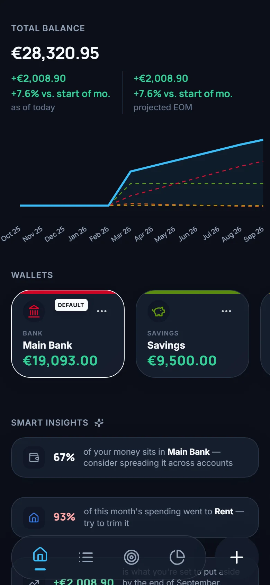
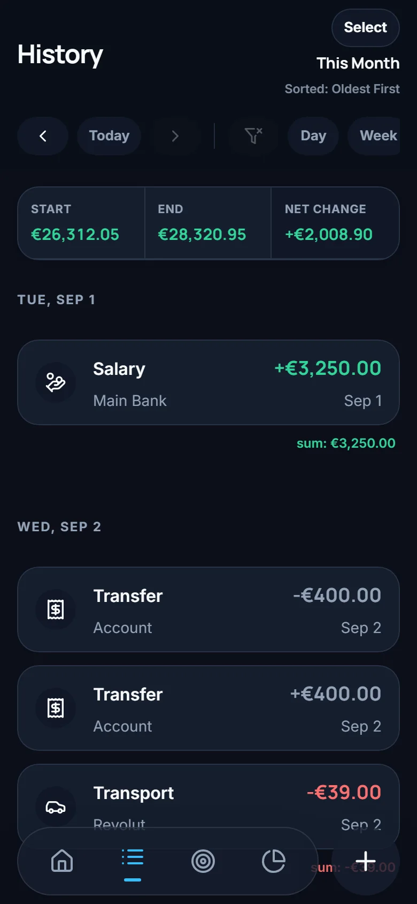
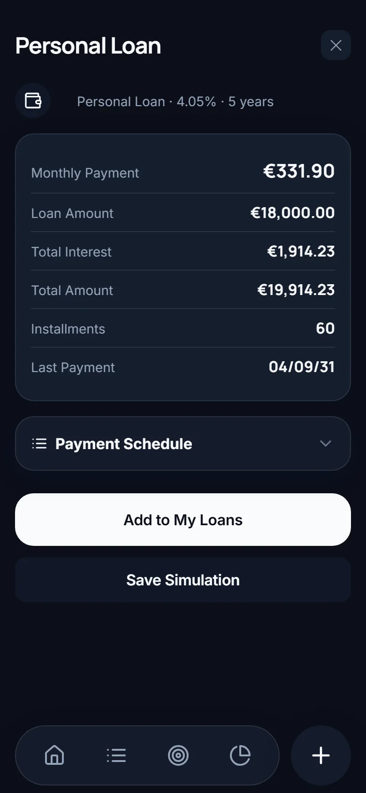
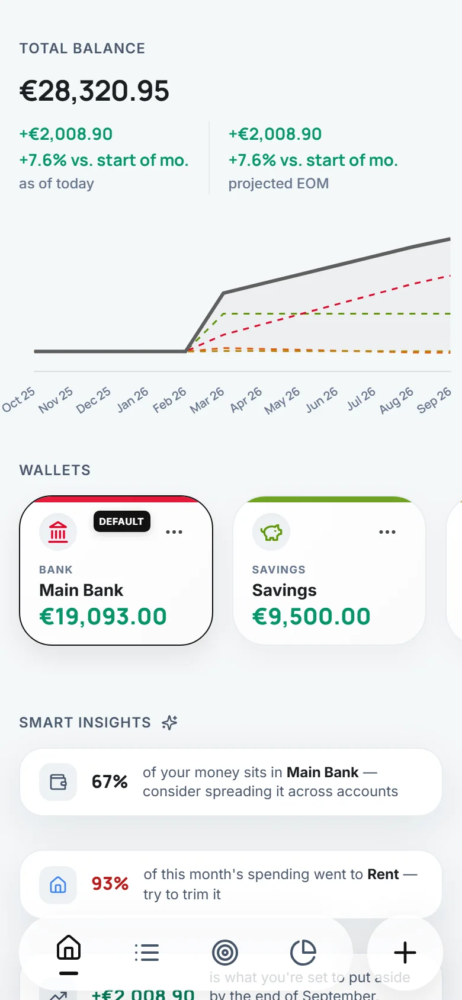

Stack'd · personal finance tracker
Money tracking that stays on your phone.
Stack'd keeps every wallet, every log and every budget on your device. There is no account to create and no cloud to sync with. The only thing that ever goes online is the bank link you can choose to turn on, and it shows you every transaction before saving it.

What's inside
Built from the ledger up.
A balance in Stack'd is never a number someone typed in. It is the sum of the logs behind it, recomputed every time, so what you see always matches what you recorded.
Wallets and logs
Bank, card, cash, savings, credit card, investment: as many wallets as you keep in real life, each in its own currency. Log an expense, an income or a transfer between two wallets in a few taps, with a note and tags.
Repeating logs
Rent, salary, subscriptions: set a schedule once and the whole series is written out ahead of time. Edit one occurrence, this and future ones, or the entire series.
Goals
A monthly budget per category. The Goals tab shows what is already spent, what is still committed by repeating logs, and how the month will end up, not only how it looks today.
Debt simulator
Enter an amount, a rate and a duration and read the full amortization schedule: every instalment, its interest share and the remaining principal. Link a loan to its repeating payment and progress tracks itself.
Bank statement import
Drop in a statement as CSV, camt.053 or MT940. Stack'd maps the columns, skips what you already logged, pairs transfers between your own wallets and shows a review before anything is saved. The file itself is never kept.
Home widgets and insights
Compose the Home screen from eight widget types: latest logs, income versus expense, top categories, budgets, savings rate, 50/30/20 and more. Smart Insights point out what changed this month in one line each.
The screens
Quiet by design.
Low colour, large numbers, one thing per screen. Light and dark themes, and the interface in English, French, Italian, Spanish or Portuguese.



Privacy
There is nothing to opt out of.
Stack'd has no backend. The app works fully offline, and the only copy of your data is the one on your device. This is the list from our privacy policy, unchanged.
- No user accounts or registration
- No cloud sync
- No uploading of imported files
- No analytics or usage tracking
- No advertising or ad identifiers
- No third-party data sharing
Access and portability
Export everything as CSV
Accounts, categories, transactions and loans leave the app as plain CSV files that open in any spreadsheet. The same files import back, so a backup is a full restore.
Rectification
Edit any record, any time
Nothing is locked after saving. Change a log, an account or a budget and every derived figure follows.
Erasure
Factory reset, and it is gone
Delete one record or erase everything from Settings. Since no copy exists elsewhere, no one, including us, can bring it back. Keep your CSV backups safe.
The studio
Stack'd Development Studio
Stack'd Development Studio is an independent software studio. We make Stack'd, and we build it the way we would want our own tools built: computed on the device, exported in formats we can open anywhere, and finished down to the typography.
Most finance apps ask for your bank login on day one and pay for themselves with your data. We think a tracker should be a private notebook with very good arithmetic, so that is what we make.
Questions, ideas, a bug?
Write to us. Your email is used only to reply and never joins a list.